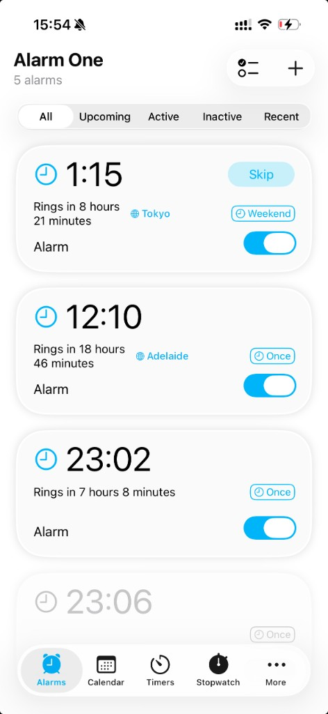

Flexible Repeats
Weekly, monthly, yearly, and custom cycle rules that stay readable.
Set and forget naps, medication, cooking, meetings, travel, flexible repeats, and city-based time zones. Alarm One keeps your alarms clean, synced, and easy to trust.

Alarm One keeps the familiar iPhone alarm experience, then adds the one-time alarms, sync, rules, context, and visibility the built-in Clock app leaves out.
Weekly, monthly, yearly, and custom cycle rules that stay readable.
Choose a city and set the alarm by its local time, including DST.
Fire once and disappear after flights, naps, medication, or cooking.
Pick built-in or custom sounds, with snooze and gentle alerts.
Keep the next alarm visible on the lock screen and home screen.
Set alarms on one Apple device and keep them available on the rest.
Pick a city. Set the time in that city's clock. Alarm One handles the conversion automatically.
Set a reminder for 9:00 AM New York even when you're in Paris or Tokyo.
Call at a good local hour without checking a world clock first.
Anchor wake-ups to the city you're landing in before your body catches up.
Basic alarms are fine until schedules become one-off, monthly, seasonal, shifted, synced across devices, or international. Alarm One keeps those patterns readable and close to the iPhone experience.
Perfect for One-Time Alarms!
This app is so useful! I was scared of oversleeping for my early morning flight, so I set a bunch of alarms. The best part is I don't have to delete them one by one afterwards. Total lifesaver for travel!
★★★★★App Store User
Easy to use
Like the app. Simple and reliable for managing multiple alarms without the clutter.
★★★★★App Store User
Great for custom repeats
I use it for alarms that do not fit a simple daily schedule. Much cleaner than keeping a long list of old alarms.
★★★★★App Store User
The Clock app covers basic daily alarms. Alarm One adds one-time alarms that auto-delete, iCloud sync, flexible repeat rules (monthly, yearly, custom cycles), time zone alarms by city, custom sounds, alarm groups, and widgets to keep your next alarm visible.
A one-time alarm fires once and disappears from your list. Perfect for early flights, naps, medication, cooking, meetings, or any reminder you don't want to manually delete afterwards.
Yes. Alarm One supports custom ringtones and sounds so you can pick an alert that works for you — loud for wake-ups, gentle for light reminders.
Pick a city, set the time in that city's clock, and Alarm One calculates your local equivalent. It updates automatically when daylight saving time changes.
Anyone whose schedule doesn't fit "repeat every day": one-time alarm users, people with monthly meetings, remote workers across time zones, travelers, or anyone who wants cleaner alarm management.